|
4-4-2
|
Argentina | 3 | - | 0 | Algeria |
4-3-3
|
| HT 1-0 | ||||||
|
FIFA World CupWednesday 17 June 2026
|
||||||
- Venue
- Kansas City Stadium
- Attendance
- 69,045
- Referee
- Szymon Marciniak
Goal17'
L. Messi
Assist: R. De Paul
Substitution46'
G. Montiel
N. Molina
- 2
Substitution55'
T. Almada
N. González
Lautaro Martínez
J. Alvarez
Goal60'
L. Messi
Goal76'
L. Messi
Assist: N. González
- 2
Substitution80'
L. Messi
N. Paz
C. Romero
N. Otamendi
Whistle45+5'
45+5'
- 3
Substitution64'
H. Boudaoui
H. Aouar
A. Gouiri
M. Amoura
A. Hadj Moussa
R. Mahrez
Substitution81'
I. Maza
A. Boulbina
Substitution82'
N. Bentaleb
R. Zerrouki
Argentina | |
|---|---|
Goalkeeper | |
| 23 | E. Martínez |
Defender | |
| 4 | G. Montiel 46' |
| 6 | Lisandro Martínez |
| 13 | C. Romero 80' |
| 25 | F. Medina |
Midfielder | |
| 7 | R. De Paul |
| 16 | T. Almada 55' |
| 20 | A. Mac Allister |
| 24 | E. Fernández |
Forward | |
| 10 | L. Messi 17'60'76'80' |
| 22 | Lautaro Martínez 55' |
Substitutes | |
| 9 | J. Alvarez 55' |
| 15 | N. González 55' |
| 18 | N. Paz 80' |
| 19 | N. Otamendi 80' |
| 26 | N. Molina 46' |
Algeria | |
Goalkeeper | |
| 23 | L. Zidane |
Defender | |
| 2 | A. Mandi |
| 15 | R. Aït-Nouri |
| 17 | R. Belghali |
| 21 | R. Bensebaini |
Midfielder | |
| 14 | H. Boudaoui 64' |
| 19 | N. Bentaleb 82' |
| 22 | I. Maza 81' |
Forward | |
| 9 | A. Gouiri 64' |
| 10 | F. Chaïbi |
| 11 | A. Hadj Moussa 64' |
Substitutes | |
| 6 | R. Zerrouki 82' |
| 7 | R. Mahrez 64' |
| 8 | H. Aouar 64' |
| 18 | M. Amoura 64' |
| 20 | A. Boulbina 81' |


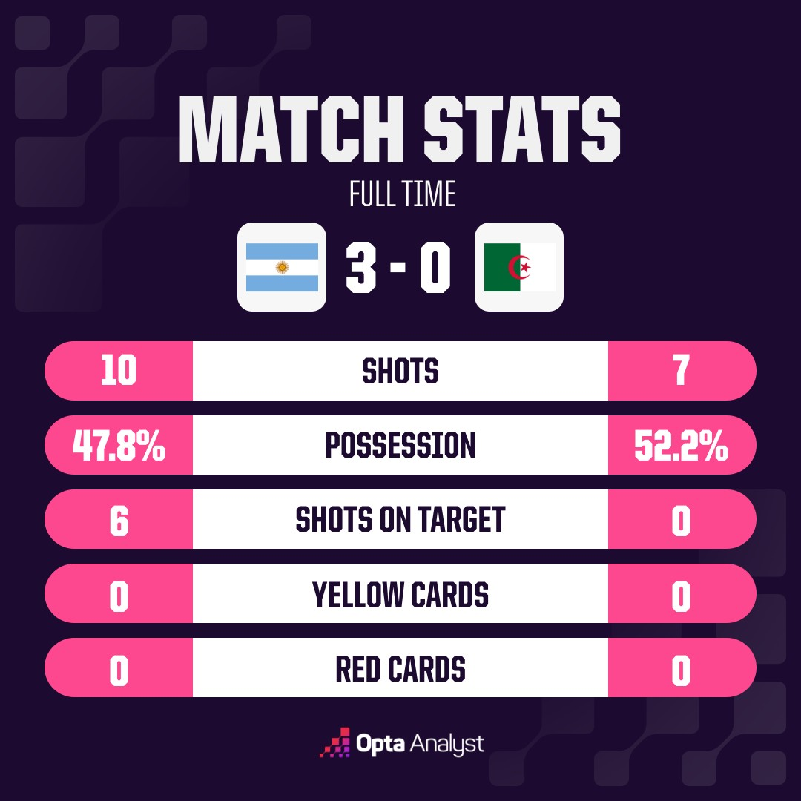
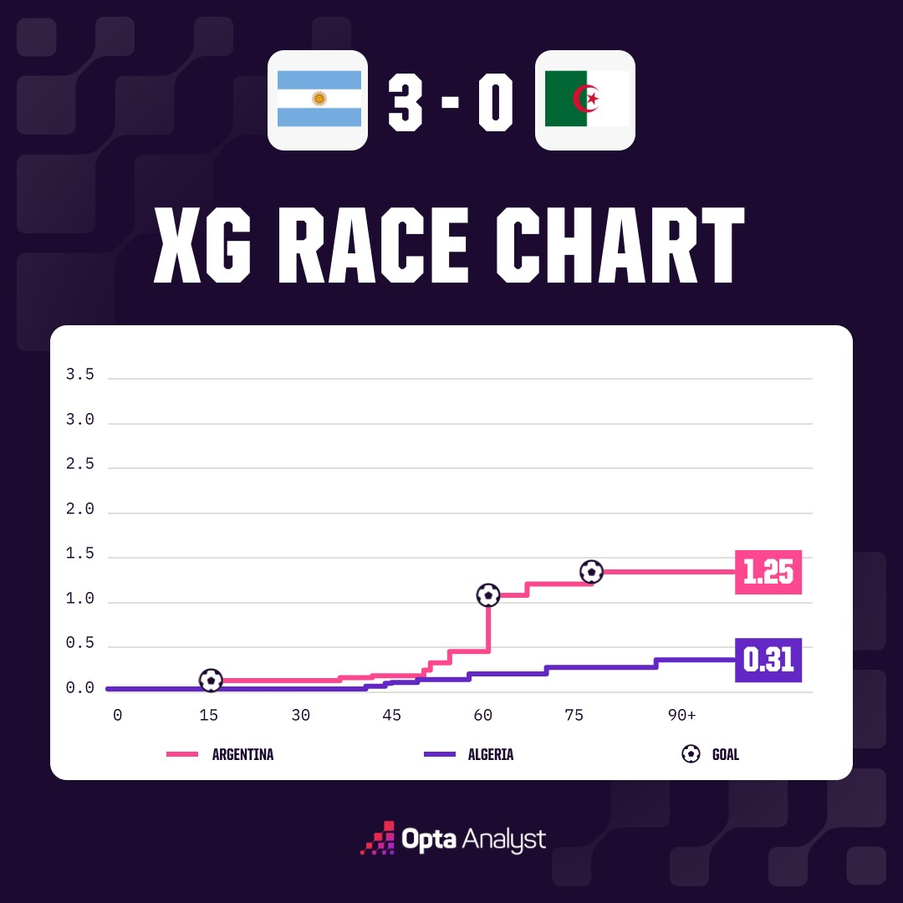
98'
Algeria have failed to win in their last 3 games in the FIFA World Cup, their last longer winless streak was from 3rd June 1986 to 17th June 2014, a run of 7 games.
98'
Argentina are undefeated in their last 7 games in the FIFA World Cup, their last longer unbeaten streak was from 12th June 2002 to 27th June 2010, a run of 10 games.
98'
Algeria failed to attempt a shot on target in this game, it's the first time they failed to attempt a shot on target in a game in the FIFA World Cup (since at least 1965/1966).
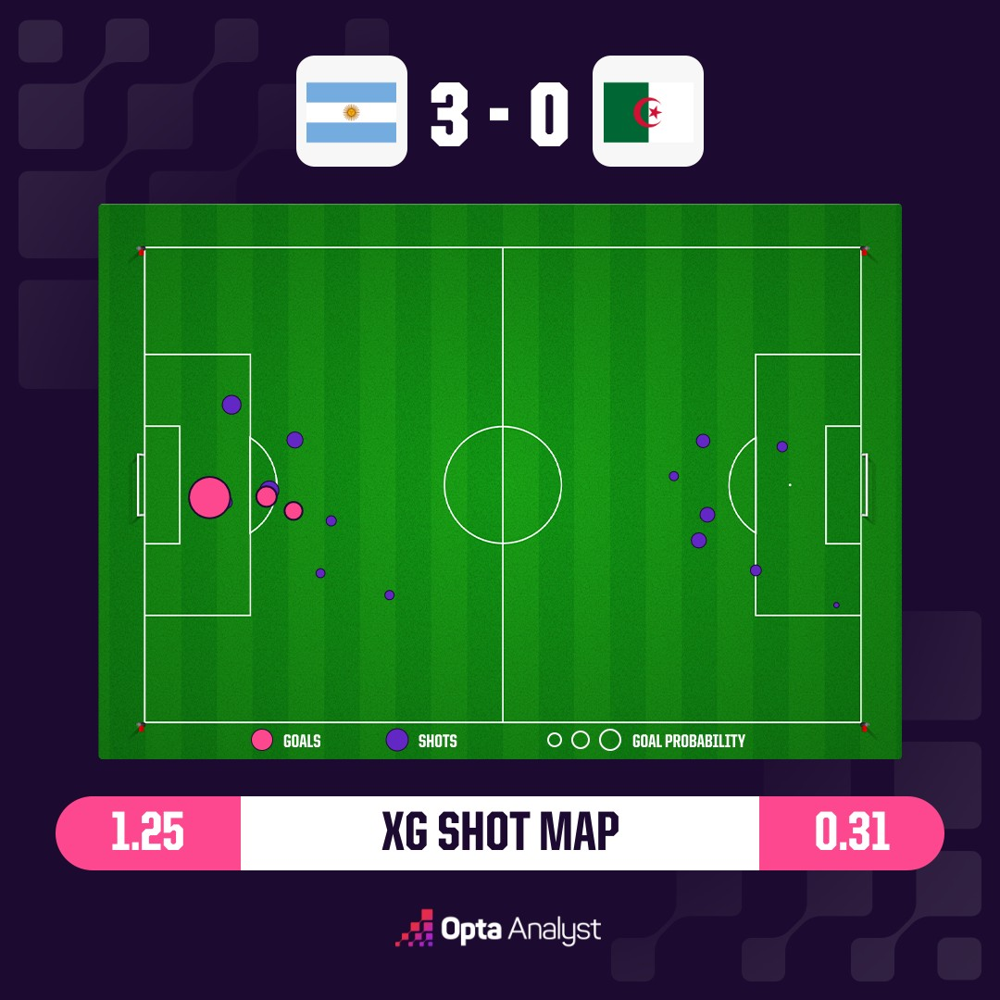
90+7'
That's it! The referee blows the whistle and we have reached full-time. The final score at Kansas City Stadium is Argentina 3-0 Algeria.
90+6'
Neither team has had a shot in the past 10 minutes, as this match just enters something of a down period. Algeria have seen more of the ball, with 58 per cent possession, but Argentina are keeping them away from goal. There is still a chance the match will spark into life, though.
90+5'
Nico Paz goes in on Ramy Bensebaini and concedes a foul. The free-kick is not in a particularly dangerous area from Argentina’s viewpoint, though.
90+4'
Masterclass in game management from Argentina. They're making Algeria chase ghosts with these patient passing moves, content to keep the ball until the final whistle.
90+2'
Still behind, but Algeria are refusing to roll over - defensive urgency rising as they fend off more pressure and push for a late turnaround.
90+1'
Plenty of the ball in the last quarter-of-an-hour of this match for Algeria, but still Argentina stand firm, despite having had only 29.76% of the ball in that period. Can Algeria make their possessional dominance count?
88'
It’s backs to the wall now — Argentina throwing everything into defending their advantage, with a flurry of crucial interventions.
86'
Shot blocked! Riyad Mahrez unleashes an attempt at goal, but the ball does not reach its target thanks to Nico González, who makes a solid block to stem the danger – for now.
85'
A barrage of deliveries from Algeria, who are pushing hard to force the equaliser.
85'
Foul! A free-kick now in a dangerous area for Algeria, after Houssem Aouar is fouled by Alexis Mac Allister. Can Algeria make the most of this opportunity?
83'
A rash challenge from Julián Alvarez, who sends Aïssa Mandi tumbling, giving Algeria a free-kick. It is not in a threatening position, but it gives them a chance to get back on the ball.
83'
A free-kick to Algeria, as Facundo Medina goes in and fouls Riyad Mahrez. However, Argentina will not mind giving one away in this area too much, with plenty of distance to their goal.
82'
The Algeria manager is looking to the substitutes’ bench, bringing on Ramiz Zerrouki in place of Nabil Bentaleb. Will the change make a difference? Let’s find out!
81'
The Algeria manager is looking to the substitutes’ bench, bringing on Adil Boulbina in place of Ibrahim Maza. Will the change make a difference? Let’s find out!
81'
Algeria have not had a shot on target so far in this game.
80'
Nicolás Otamendi is making his 15th appearance in the FIFA World Cup.
80'
Cristian Romero’s match is over as Argentina decide to make a substitution. Nicolás Otamendi enters the field in what looks like a tactical change.
80'
Lionel Messi’s match is over as Argentina decide to make a substitution. Nico Paz enters the field in what looks like a tactical change.
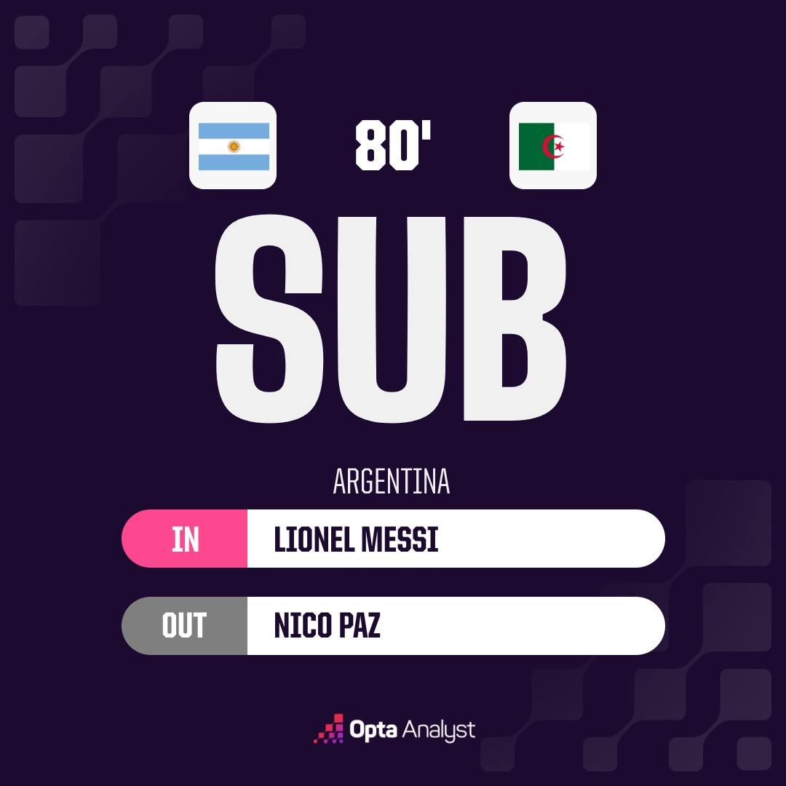
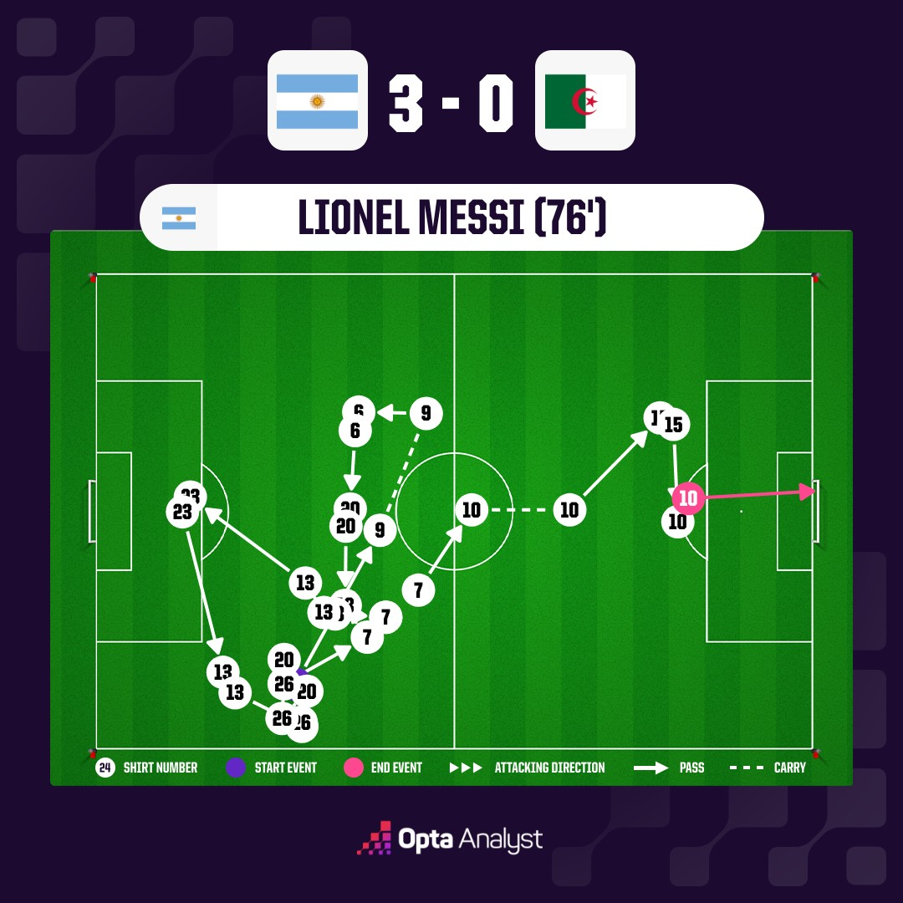
76'
GOAL! Argentina have extended their lead! It's Lionel Messi who has got the goal, and Algeria are now three goals behind, with Argentina now in a strong position to record a victory.
76'
Lionel Messi has scored his 16th goal in the FIFA World Cup.
75'
A free-kick to Argentina, as Farès Chaïbi goes in and fouls Rodrigo De Paul. However, Algeria will not mind giving one away in this area too much, with plenty of distance to their goal.
69'
MISS! A shot from Houssem Aouar ends up being off target. They might have done a bit better with that one, but it remains Algeria 0-2 Argentina.
69'
A good response from Algeria- steady on the ball now and looking to take control after falling behind.
67'
It’s backs to the wall now — Argentina throwing everything into defending their advantage, with a flurry of crucial interventions.
66'
Lionel Messi's effort is deflected out for a corner. Can Argentina make anything of this set-piece?
66'
Lionel Messi has attempted 5 shots, the first time he has attempted at least 5 shots in a match in the FIFA World Cup since facing France on 18th December 2022 (5 shots).
66'
Just over an hour played, so let’s check on the shot count for each side. Argentina have had 8, getting 4 of those on target. Algeria, meanwhile, have had no efforts on target, and 5 overall.
64'
A free-kick to Argentina, as Mohammed Amoura goes in and fouls Cristian Romero. However, Algeria will not mind giving one away in this area too much, with plenty of distance to their goal.
64'
A substitution for Algeria sees Anis Hadj Moussa replaced by Riyad Mahrez. There does not appear to be any obvious sign of an injury, so that is a tactical switch.
64'
A substitution for Algeria sees Amine Gouiri replaced by Mohammed Amoura. There does not appear to be any obvious sign of an injury, so that is a tactical switch.
64'
The Algeria manager is looking to the substitutes’ bench, bringing on Houssem Aouar in place of Hicham Boudaoui. Will the change make a difference? Let’s find out!
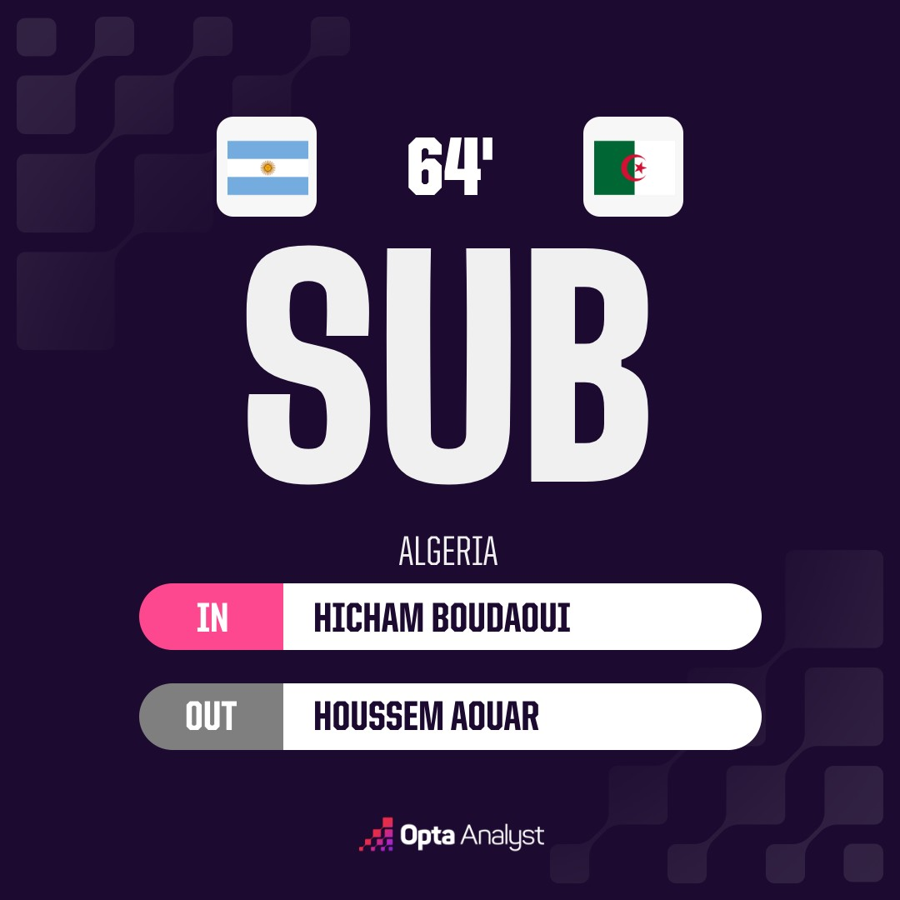
63'
A rash challenge from Hicham Boudaoui, who sends Enzo Fernández tumbling, giving Argentina a free-kick. It is not in a threatening position, but it gives them a chance to get back on the ball.
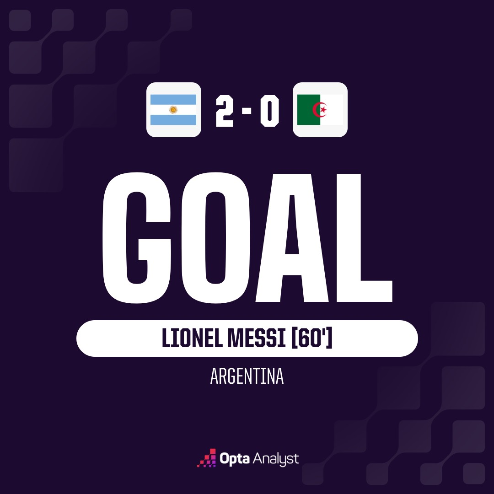
60'
Lionel Messi has scored his 15th goal in the FIFA World Cup.
60'
GOAL! Lionel Messi scores, and Argentina are now well in front – surely they will go on and see this one out now? It seems a long way back for Algeria, with Argentina well in control of this match.
60'
Luca Zidane is called into action to keep out a shot from outside the box by Alexis Mac Allister. The effort from the Argentina player was on target, but Algeria shot-stopper got to it.
60'
Despite trailing, Algeria are showing real defensive grit, digging in and stopping further damage as they try to build a platform.
57'
BLOCKED! That was close. Ibrahim Maza got off a shot, which was heading in, but Cristian Romero was on hand to make a vital intervention. Great block!
55'
Lautaro Martínez’s match is over as Argentina decide to make a substitution. Julián Alvarez enters the field in what looks like a tactical change.
55'
A substitution for Argentina sees Thiago Almada replaced by Nico González. There does not appear to be any obvious sign of an injury, so that is a tactical switch.
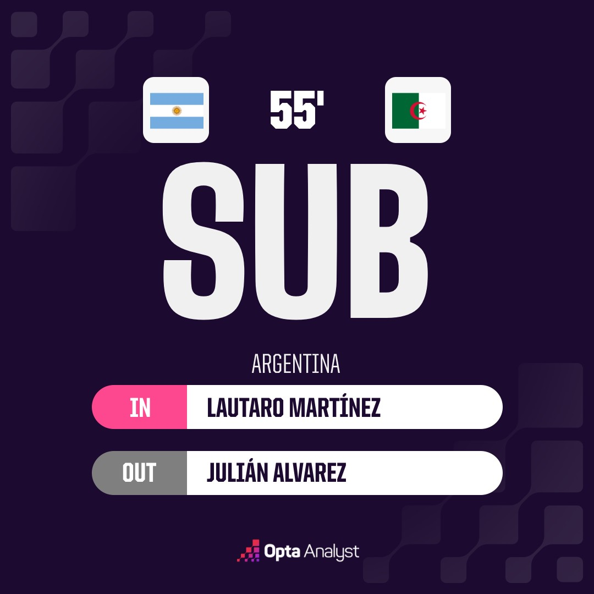
55'
Cristian Romero goes in on Amine Gouiri and concedes a foul. The free-kick is not in a particularly dangerous area from Argentina’s viewpoint, though.
54'
Chance! A shot from inside the area from Lautaro Martínez was heading in, but Luca Zidane makes a fine stop to keep it out. A big save from the Algeria shot-stopper!
52'
Despite trailing, Algeria are showing real defensive grit, digging in and stopping further damage as they try to build a platform.
52'
Great defending from Argentina, who are staying organised and winning key battles to preserve their lead.
52'
Plenty of the ball in the last quarter-of-an-hour of this match for Algeria, but still Argentina stand firm, despite having had only 31.51% of the ball in that period. Can Algeria make their possessional dominance count?
51'
Cristian Romero goes in on Ibrahim Maza and concedes a foul. The free-kick is not in a particularly dangerous area from Argentina’s viewpoint, though.
51'
A chance goes begging as Lionel Messi gets off a shot that does not hit the target. They might have done better with that one, but instead it is a goal-kick to Algeria.
48'
Hicham Boudaoui goes in on Lionel Messi and concedes a foul. The free-kick is not in a particularly dangerous area from Algeria’s viewpoint, though.
46'
Excellent defensive work from Argentina; their organization and success in key duels are effectively safeguarding their lead.
46'
A substitution for Argentina sees Gonzalo Montiel replaced by Nahuel Molina. There does not appear to be any obvious sign of an injury, so that is a tactical switch.
51'
Argentina are unbeaten in their last 4 FIFA World Cup matches when leading at half-time (W2, D2) dating back to 22nd November 2022 against Saudi Arabia (L1-2).
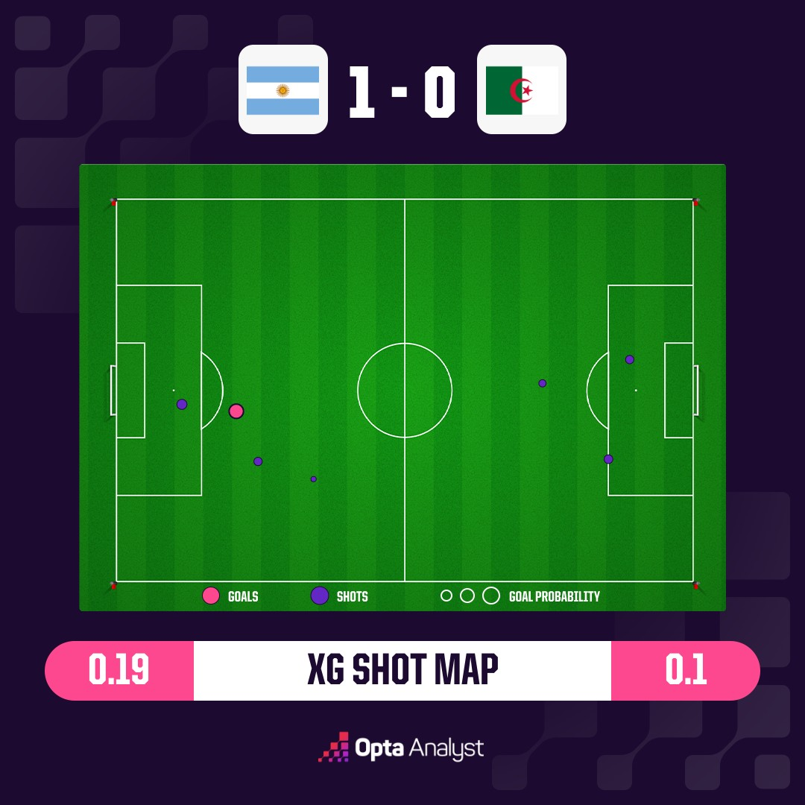
45+5'
Half-time! We reach the interval at Kansas City Stadium and it is Argentina who have a 1-0 lead over Algeria. Can they hold on and see this out in the second half?
45+5'
That is a disappointing effort from Alexis Mac Allister, who went for glory but got their attempt wrong, and the shot sailed off target. A frustrating moment for Argentina.
45+4'
A foul from Rafik Belghali on Facundo Medina sees Argentina win a free-kick, but it is not in a dangerous position, so Algeria should be confident they can defend it easily enough.
45+4'
BLOCK! An intervention from Facundo Medina might have just prevented a goal, with the defending player getting in the way of an attempt from Anis Hadj Moussa. Solid defending there!
45+1'
A rash challenge from Lautaro Martínez, who sends Ramy Bensebaini tumbling, giving Algeria a free-kick. It is not in a threatening position, but it gives them a chance to get back on the ball.
45+1'
That is a disappointing effort from Farès Chaïbi, who went for glory but got their attempt wrong, and the shot sailed off target. A frustrating moment for Algeria.
44'
MISS! A shot from Farès Chaïbi ends up being off target. They might have done a bit better with that one, but it remains Algeria 0-1 Argentina.
43'
A rash challenge from Alexis Mac Allister, who sends Ibrahim Maza tumbling, giving Algeria a free-kick. It is not in a threatening position, but it gives them a chance to get back on the ball.
42'
A chance goes begging as Thiago Almada gets off a shot that does not hit the target. They might have done better with that one, but instead it is a goal-kick to Algeria.
41'
No luck! Farès Chaïbi takes on a shot that, had they got it right, might have been set to test the goalkeeper, but instead it is sent off target and Argentina come away unscathed.
41'
Algeria have not had a shot so far in this game.
41'
Can Argentina survive here? They will have some defending to do after the ball is turned behind for a corner kick. Will Algeria take this opportunity and grab the goal they have been pushing for?
39'
Offside! Thiago Almada thought they were through on goal, but the Algeria defence stepped up in time to catch them offside, and the assistant referee puts their flag up.
37'
A free-kick to Algeria, as Facundo Medina goes in and fouls Aïssa Mandi. However, Argentina will not mind giving one away in this area too much, with plenty of distance to their goal.
37'
There is plenty of possession for Argentina, with 73.46% compared to Algeria 26.54% in the last 15 minutes. However, Argentina have not been able to turn that dominance of the ball into a goal.
37'
MISS! A shot from Lionel Messi ends up being off target. They might have done a bit better with that one, but it remains Argentina 1-0 Algeria.
36'
A foul from Rafik Belghali on Thiago Almada sees Argentina win a free-kick, but it is not in a dangerous position, so Algeria should be confident they can defend it easily enough.
35'
Despite trailing, Algeria are showing real defensive grit, digging in and stopping further damage as they try to build a platform.
34'
A free-kick to Argentina, as Amine Gouiri goes in and fouls Alexis Mac Allister. However, Algeria will not mind giving one away in this area too much, with plenty of distance to their goal.
32'
In the last 15 minutes, it is Argentina who have dominated the ball, having seen 65.12% of the possession, yet they have not been able to go and turn that into a single shot, so there is no imminent sign of a goal.
31'
Lionel Messi goes in on Aïssa Mandi and concedes a foul. The free-kick is not in a particularly dangerous area from Argentina’s viewpoint, though.
31'
Argentina looking confident now - a composed spell of possession as they stroke the ball around and head toward the break in control.
28'
A lull in this match, as the teams prob and probe, but without much success. It has been 10 minutes since there was an attempt from either side, though Argentina are seeing more of the ball, with 65 per cent possession to Algeria’s 35 per cent during that time.
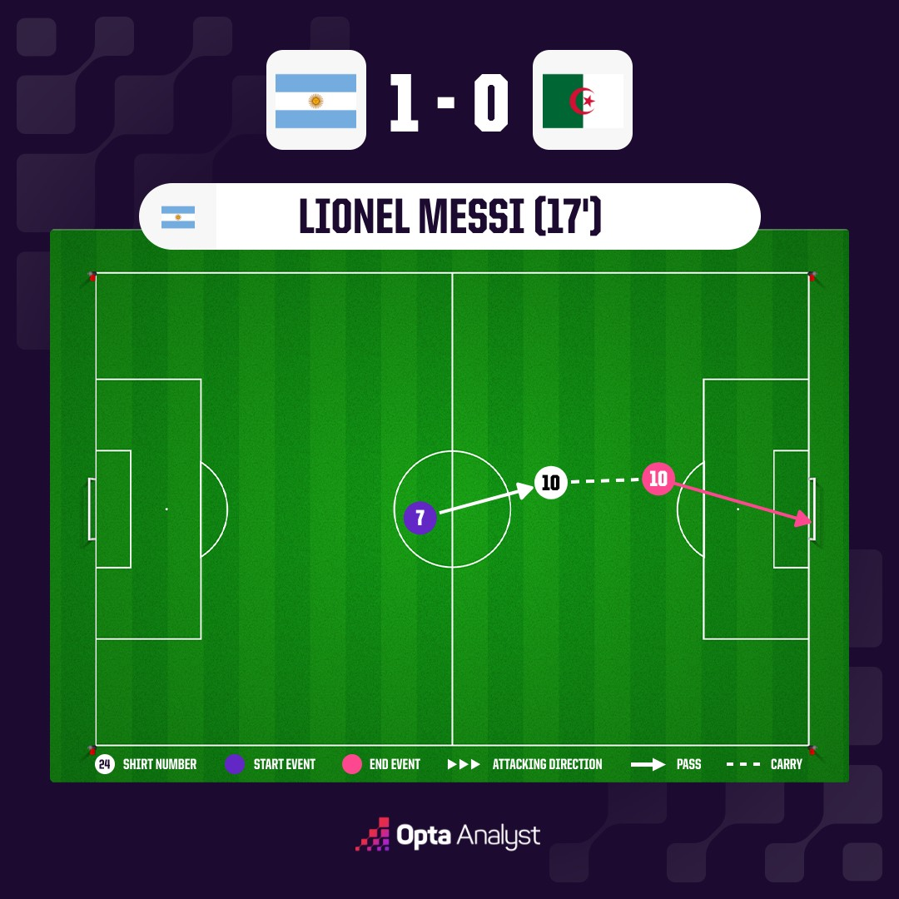
17'
GOAL! Lionel Messi scores from long range and Argentina now have the lead! There is still time for Algeria to get back into the game, but that might just prove to be the pivotal moment of this contest.
17'
Argentina have avoided defeat in their last 6 matches when scoring first in the FIFA World Cup, since a 1-2 loss to Saudi Arabia on 22nd November 2022.
17'
Lionel Messi has scored his 14th goal in the FIFA World Cup.
17'
Plenty of the ball in the last quarter-of-an-hour of this match for Argentina, but Algeria have been able to hold them off with ease, with Argentina having failed to even muster a shot at goal.
11'
A free-kick in a dangerous position now for Algeria, after a foul from Gonzalo Montiel on Rayan Aït-Nouri. Can Algeria make Argentina pay for that rashness from Gonzalo Montiel?
11'
This game is certainly in a bit of a lull now, with neither team having had an attempt at goal in the past 10 minutes. It could do with something to spark it into life. Argentina have had more possession during the quiet spell, but are yet to do much with it.
10'
Lautaro Martínez goes in on Aïssa Mandi and concedes a foul. The free-kick is not in a particularly dangerous area from Argentina’s viewpoint, though.
9'
VAR overturns the decision! The video official sees enough reason for the original call to be overturned, and so elects to intervene here.
9'
We are going to VAR. The game has stopped for now with the assistant referee in the video booth now set to review the incident. Will the decision be altered?
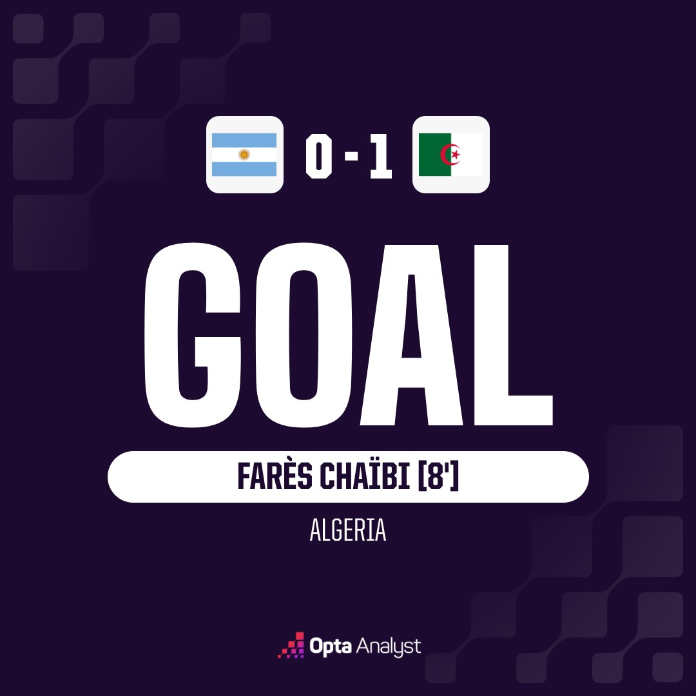
8'
That’s offside! A switched-on defensive line from Argentina, as they step up at the right time to catch Farès Chaïbi offside, and the assistant referee’s flag is up.
6'
It’s been tight so far, and Argentina are making sure it stays that way with strong defensive discipline and well-timed clearances.
5'
The Algeria defence steps up in time and there is a frustration for Lionel Messi, who thought they were through until the flag goes up to signal offside.
4'
Offside! Lautaro Martínez thought they were through on goal, but the Algeria defence stepped up in time to catch them offside, and the assistant referee puts their flag up.
1'
Free-kick! A foul from Enzo Fernández on Anis Hadj Moussa. It is well away from Argentina’s goal, so it is unlikely to result in a chance for Algeria.
1'
Up and running! Argentina have kicked off and this FIFA World Cup match is now under way at Kansas City Stadium. Let’s hope for an intriguing battle on the pitch.
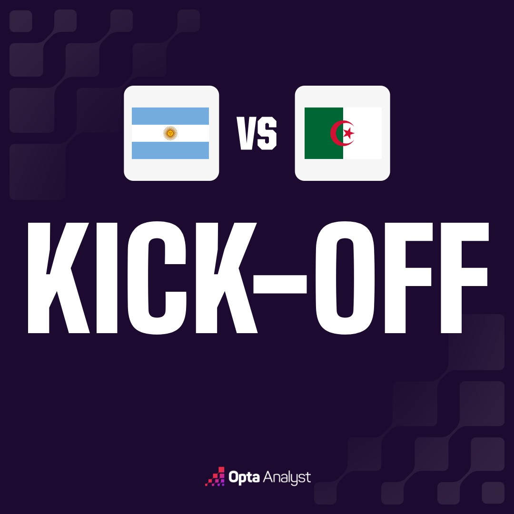
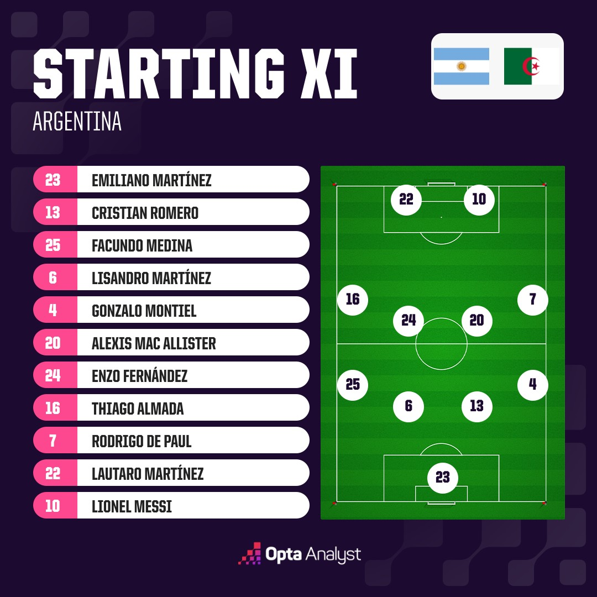
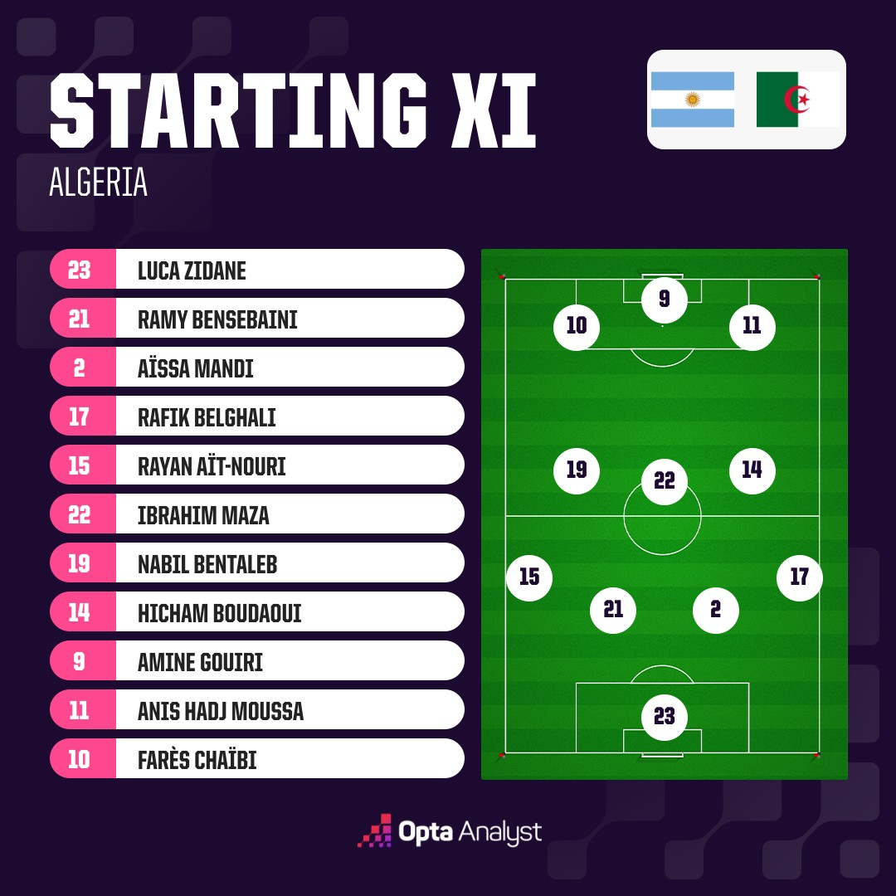
Lionel Messi is making his 27th appearance in the FIFA World Cup.
Defending champions Argentina play Algeria on Tuesday in the 2026 Canada/Mexico/USA FIFA World Cup group stage at Kansas City Stadium.
It's the first match of the competition for both sides. Argentina defeated Iceland 3-0 in their last match, a June 9 friendly at Jordan-Hare Stadium, their seventh victory in a row. Valentín Barco, Lionel Messi, and Thiago Almada netted in the win.
Algeria won their last game on June 10, beating Bolivia 4-0 in a friendly at Rock Chalk Park. Amine Gouiri netted two to lead the scoring. In 2026, they have won four, drawn one, and lost one.
Argentina won the previous encounter between the teams, coming out on top 4-3 in June 2007.
The pair of Barco and Messi have provided stand-out moments for Argentina this year. They are the team's joint top scorers with two goals apiece. Gouiri has been the leading attacking threat for Algeria in 2026, netting on four occasions.
Algeria have been impressive in defence of late, as they have shut out opponents over their last 393 minutes of play in all competitions. Nigeria were the last team to score on the Algerian side, netting in a January CAF Africa Cup of Nations contest.
Argentina have won each of their last six matches in all competitions. The Argentinian side scored 20 and conceded one in that stretch, scoring first in all six contests. They had 10 first-half goals, while their opponents failed to find the net in the first 45 minutes. The Algerian side have won four, drawn one and lost one in their last six. The Algerian side scored 13 and conceded two in that period, netting first in four of the six. They had four goals in the first half, while their opponents failed to find the net before the break.
-
General
Possession 47.8% 47.76752.23352.2% Possession lost in defensive half 36 361111 Possession lost in middle third 29 292929 Duels 83 838383 Duels success rate 47.0% 46.98851.80751.8% Aerial duels 8 888 Aerial duels won 37.5% 37.562.562.5% Successful dribbles 2 288 Fouls won 8 81313 Offsides 3 311 Corner awarded 2 222 -
Distribution
Passes 561 561609609 Long passes 32 322525 Long passes proportion (%) 5.7% 5.7044.1054.1% Passing accuracy 89.8% 89.8492.44792.4% Passes in opponents' half 207 207320320 Passing accuracy in opponents' half (%) 84.5% 84.54188.7588.8% Total passes in the final third 78 78144144 Passing accuracy in final third (%) 71.8% 71.79581.94481.9% Forward passes 314 314352352 Forward passes (%) 56.0% 55.97157.857.8% Through balls 4 400 Final third entries 39 396161 Penalty area entries 10 101616 Total open play crosses 4 488 Crosses 6 699 Crossing accuracy 16.7% 16.66711.11111.1% -
Attack
Goals 3 300 Shots 10 1077 Shots on target 6 600 Blocked shots 0 033 Headed shots 1 111 Shots outside the box 6 644 Shots inside the box 4 433 Shots accuracy excluding blocked shots 60.0% 6000.0% Shooting accuracy 60.0% 6000.0% Key Passes 7 766 -
Defence
Tackles 27 271717 Tackles success rate 70.4% 70.3758.82458.8% Clearances 17 171212 Interceptions 10 1088 Recoveries 50 503939 Attacking third recovery 4 455 Defensive third recovery 28 281515 Midfield third recovery 18 181919 Recoveries in attacking half (%) 8.0% 812.82112.8% -
Discipline
Fouls conceded 13 1388 Yellow cards 0 000 Red cards 0 000